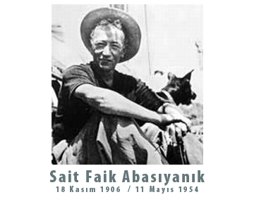

|

Pardus 2007 için son beta: Sait Faik
Kod adı olarak 18 Kasım 1906'da doğan ünlü öykücü Sait Faik Abasıyanık’ın adını seçtik; martıların, sarhoşların, balıkçıların, dülger balığının, sokakların, İstanbul’un ve avareliğin yazarının:
"Söz vermiştim kendi kendime: Yazı bile yazmayacaktım. Yazı yazmak da hırstan başka ne idi? Burada namuslu insanlar arasında sakin ölümü bekleyecektim. Hırs hiddet neme gerekti? Yapamadım. Koştum tütüncüye, kâğıt kalem aldım, oturdum. Ada’nın tenha yollarında gezerken canım sıkılırsa küçük değnekler yontmak için cebimde taşıdığım çakımı çıkardım. Kalemi yonttum. Yonttuktan sonra tuttum öptüm. Yazmasam deli olacaktım."
İndirmek için...
 Pardus 2007'de Değişenler Pardus 2007'de Değişenler
 Küçük paketler, hızlı güncelleme
// Pardus paket yöneticisi PiSi’de yapılan geliştirmelerle yazılımlar artık çok daha az yer kaplayıp, internet üzerinden çok daha hızlı indirilebiliyorlar...
Küçük paketler, hızlı güncelleme
// Pardus paket yöneticisi PiSi’de yapılan geliştirmelerle yazılımlar artık çok daha az yer kaplayıp, internet üzerinden çok daha hızlı indirilebiliyorlar...
Paket yöneticisi
// PiSi’nin kullanışlı ve sevimli grafik arayüzü kullanılarak yazılımların güncelleme ve kurulum süreçleri de büyük ölçüde kolaylaştı.....
Hızlı açılış
// Pardus yapılandırma çerçevesi ÇOMAR kullanılarak geliştirilen açılış sistemi sayesinde diğer işletim sistemlerine göre çok daha hızlı açılıyor....
Hata düzeltmeleri
// Bir önceki beta sürümü "ATA"ya göre, 200'e yakın hata düzeltmesi...
Diğer iyileştirmeler
// USB belleklerden başlatılabilme, çok dilli kurulum desteği (Türkçe, İngilizce, Almanca, Hollandaca), Tulliana simge setine eklenen yeni semboller, ...
Ve değişmeyenler
Pardus her zaman olduğu gibi tüm masaüstünde Türkçe yazım denetimi, internet araçları, ofis yazılımları, çokluortam (resim, müzik, video vb) oynatıcıları, oyunlar ve sayısız yazılım ile kullanıcılarının tüm gereksinimlerini karşılayacak tek bir CD olarak geliyor...
|